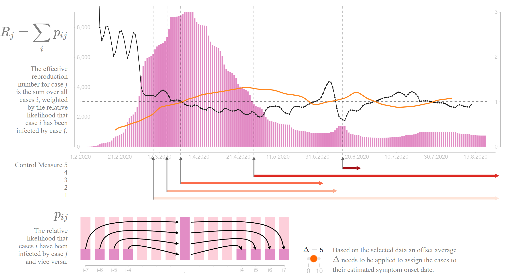

Medical Professionals and Scientists for Health, Freedom and Democracy
Obtaining competent evaluations on the basis of science and evidence.

Effective Reproduction Number
Measuring and visualizing the effective reproduction number for various epidemics